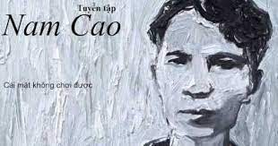

Chí Phèo
Hắn vừa đi vừa chửi. Bao giờ cũng thế, cứ rượu xong là hắn chửi. Bắt đầu chửi trời, có hề gì?
Trời có của riêng nhà nào? Rồi hắn chửi đời. Thế cũng chẳng sao: Đời là tất cả nhưng cũng chẳng là ai.
Tức mình hắn chửi ngay tất cả làng Vũ Đại. Nhưng cả làng Vũ Đại ai cũng nhủ: “Chắc nó trừ mình ra!”.
Không ai lên tiếng cả. Tức thật! Ồ thế này thì tức thật! Tức chết đi được mất! Đã thế, hắn phải chửi
cha đứa nào không chửi nhau với hắn. Nhưng cũng không ai ra điều. Mẹ kiếp! Thế thì có phí rượu không?
Thế thì có khổ hắn không? Không biết đứa chết mẹ nào đẻ ra thân hắn cho hắn khổ đến nông nỗi này! A ha!
Phải đấy hắn cứ thế mà chửi, hắn chửi đứa chết mẹ nào đẻ ra thân hắn, đẻ ra cái thằng Chí Phèo? Mà có trời biết! Hắn không biết,
cả làng Vũ Đại cũng không ai biết.
Cái chết của con mực
Người ta định giết Mực đã lâu rồi. Mực là con già hơn trong hai con chó của nhà. Nhưng cũng là con nhiều nết xấu.
Nó tục ăn: đó là thường. Nó nhiều vắt: cái ấy đủ khổ cho nó. Nó cắn càn ấy là cái khổ của bọn ăn mày.
Nhưng nó lại sủa như một con gà gáy: cái này thì không thể nào tha thứ được. Thoạt tiên người ta định ngày chết cho nó vào dịp Thanh Minh.
May cho nó hôm ấy bà chủ nhà bị ốm.
Rồi thì là Tết tháng năm. Bỗng nhiên đứa con út của bà ươn mình: bà phải kiêng để lấy sữa lành cho con bú. Sau cùng người ta nhất định thịt nó vào rằm tháng bảy ai ốm mặc.
Nhưng lần nầy Mực vẫn còn thoát nạn là vì nhờ có Du. Người con cả xa xôi ấy vừa viết thư báo chẳng bao lâu sẽ về. Bà mẹ mừng như tìm được một vật quý bị rơi và bà nhất định lùi ngày xử con Mực lại.

Cái mặt không chơi được
Sáng hôm nay đang ngồi viết với nhau, chẳng biết cái ý nghĩ lan man nào dã xui anh Sen đột ngột bảo tôi:
- Này! Tri ạ, cái mặt anh trông thế nào ấy. Quả thực không chơi được!
Tôi ngửng đầu lên. Anh đang cười mủm nhìn tôi. Tôi cười gượng. Và tự nhiên tôi buồn. Tôi nhớ đến cái lần đầu tiên tôi được gặp anh Đa.
Sen giới thiệu chúng tôi, chúng tôi bắt tay nhau. Câu chuyện rất chóng trở nên thân mật. Bởi anh Đa và tôi là người đồng quận.
Nhất là tôi đã được xem những bức vẽ của anh ngay từ hồi tôi chưa ra khỏi trường.
Điếu Văn
Thế là xong. Anh chết rồi đấy nhỉ? Không lẽ tôi lại vui khi được một cái tin như thế. Nhưng thật tôi cũng không biết có nên buồn không đấy.
Có người bảo: "Sống khổ đến đâu, cũng còn hơn chết; cái tâm lý chung của người đời như vậy".
Tuy vậy, tôi đã buồn. Buồn đến nỗi suốt một đêm không ngủ được. Thật đấy, anh Phúc ạ. Người ta thường trách tôi vô tình cảm. Nhầm. Tôi chỉ gớm ghét sự giả trá mà thôi. Mà bởi ghét giả trá quá, tôi lại thành ra giả trá.
Có điều tôi giả trá theo cách khác: tôi cố ý đóng cũi sắt tình cảm tôi. Thấy người ta thương xót quá dễ dàng, tôi quá sợ lòng thương; thấy nhiều người khóc quá tài tình, tôi bỗng xấu hổ mỗi khi chực khóc. Tôi có đến đưa ma anh cũng bằng thừa.
Đã có khối người thương tiếc anh. Đã có người vợ trẻ của anh quăn người lại như một chiếc vỏ bào, và khóc nỉ non như một bản âm nhạc mới. có lẽ chỉ có hai đứa con anh là chúng không làm thảm thiết quá thôi. Chúng không gào. Chúng không lăn lộn trên đường như một con đỉa phải vôi.
Chúng không chép miệng, ngoẹo đầu. Chúng ngây ngây, giương đôi mắt ngẩn ngơ. Thỉnh thoảng, nước mắt chúng mới ứa ra, thì chúng lại vội quệt ngang tay áo. Ấy thế mà chúng mới chính là những kẻ thương anh nhất. Chúng biết đời anh là đời chúng. Anh chết đi, chúng chỉ còn một cách, là đi ăn mày.
Một chuyện Xuvơnia
Hàn là chàng trai 18 tuổi, sống bằng những cuốn tiểu thuyết lãng mạn và ao ước một tình yêu mơ mộng. Rồi hắn ấp ủ những dự định táo bạo để được sống với người yêu.
Chỉ đến khi nhìn thấy cảnh háu đói của những cô thôn nữ thiếu ăn và được biết người mình yêu đã bán cả chiếc khăn kỷ niệm có lẽ cũng chỉ để ăn quà, Hàn mới vỡ mộng.
Những quân cướp, bao giờ muốn ăn cướp một nhà nào, bao giờ cũng phải thăm đất trước.
Hàn cũng vậy, hắn sắp làm một việc tương tự như ăn cướp. Vậy phải đi xem kỹ tình hình đã.
Mua Nhà
Anh Kim
Buổi tối hôm ấy, sau khi đưa các anh ra thuyền trở về Nam, tôi bực tức vô cùng. Tôi bực tức với tôi. Tôi đay nghiến tôi trong một phút cao hứng quá, đã mời các anh về nhà.
Con Mèo
Đầu đuôi tại con mèo. Nhưng cũng tại trời bức nữa. Bức không chịu được.
Chị cu vừa ở khung cửi xuống. Anh cu vừa ở ruộng về. Hai người cùng mỏi mệt. Hai người cùng bứt rứt. Một người ngồi quạt phành phạch.
Một người ngồi gãi cái đầu tổ quạ đến mấy tháng nay chưa gội. Chẳng ai buồn ăn cơm. Nhưng cái Viển thì lại muốn chóng xong việc để còn đi tắm.
Nó lừa thằng cu ngủ. Nó bưng mâm cơm ra hè, đặt đấy. Rồi nó chạy vào mắc, rút một cái quần, một cái yếm vắt lên vai, mải mốt đi ra ngoài cầu ao.
Nóng nực thế này thì ăn không bằng tắm. Cứ để cho vợ chồng người ta ăn trước. Tí nữa về, có còn thì nó ăn, hết thì thôi. Cái bữa tối hoạ hoằn mới có.
Ấy là khi nào cơm trưa ăn hết, còn thừa lại. Đủ chia, thì mỗi người làm một vực. Chẳng đủ chia thì nhịn. Cũng chẳng chết gì.